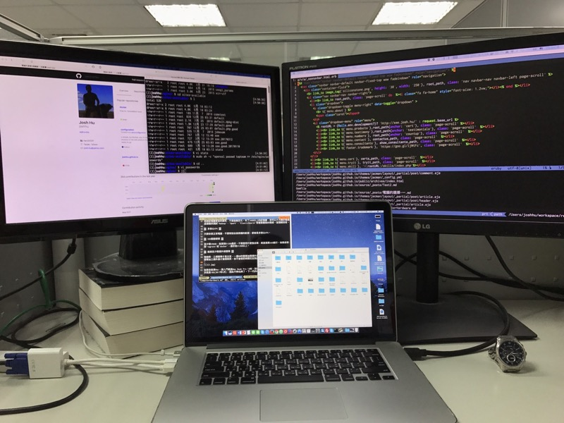
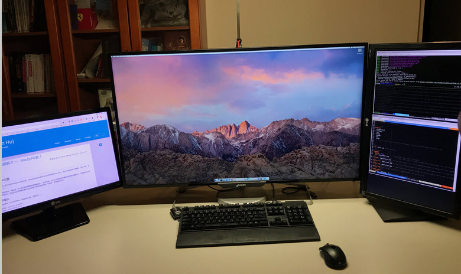

")
電腦的選擇(硬體篇)
|
TL;DR:
- 你需要至少兩台實體機(開發機和伺服器)和一台雲端主機
- 開發機用筆電，伺服器用筆電或桌機都行
- 開發機：16GB記憶體、多核心CPU、三螢幕
- 伺服器：16GB記憶體、多核心CPU
- 雲端主機用Google Compute Engine或阿里雲， 不要用Heroku
- 預算夠可再組一台NAS機(RAID1)備份資料(12GB記憶體，雙核心CPU, 3TB RAID1)
硬體的重要性
很多人覺得隨便挑一台電腦就可以開始學習IT，這個觀念對初學者看似沒什麼大問題。但隨著學習東西越來越多，需要的軟體、工具、套件越來越複雜，你的環境的嚴謹性就越來越重要了。 很少有文章探討電腦選擇的問題，我們就來看看。
需要幾台電腦？
至少三台
- 開發機
- 伺服器
- 雲端主機
如果預算足夠
- Linux NAS來當儲存伺服器
- 一般的PC作為Bare Metal虛擬化主機
桌機或筆電？
- 開發機用筆電，因為需要DEMO給客戶看，用Mac為主
- 伺服器用筆電或桌機都行，用PC
- 雲端主機選擇Google Compute Engine或阿里雲， 不要用Heroku
Mac或PC？
- 開發機最好用Mac，次要選擇為PC安裝Linux Mint
- 伺服器用PC安裝Ubuntu 16.04(或下一個LTS版本)
- 雲端主機安裝Ubuntu 16.04(或下一個LTS版本)
開發機說明
開發機非常重要，和你日夜相伴，多花一點錢在這台機器上面，會給你帶來更大的回報！選擇開發機的重點如下：
1. 首選Mac，次選Linux Minx
Mac買來就直接可以開工了，Linux一定是安裝在PC上，視你購買的硬體，可能會有驅動程式或相容性、多螢幕顯示的問題。
2. 16G以上的記憶體
目前記憶體便宜的要死，不差這幾百元。有了16GB以上的記憶體，你可以大方開好幾個虛擬機來測試Hadoop、Spark、ElasticSearch等需要叢集的環境。這個錢別省。目前Mac的筆電最多只有16GB(2017年5月)，聽說下一代就可以加到32GB，到時我一定加上去！
3. 多核心CPU
只要你買正常電腦，不要特別去挑很便宜的配備，都會是多核心CPU。
4. SSD固態硬碟
SSD主要是快，事實上電腦速度慢最大的元兇通常就是硬碟。不要想什麼TB的SATA機器硬碟，慢的要死，就直上SSD。至少要256GB，能買到512GB最好。不要想用什麼混合碟，就直接買SSD就行。如果你常跑vagrant或docker，最好是512GB以上。
5. 能接至少兩個外接螢幕
相信我，三個螢幕才是主流，一個NB的螢幕加兩個外接，是至少的，我常常用一個NB的螢幕加三個外接才覺得夠用。你不會想把時間花在到處尋找開啟的視窗上的。


6. 購買推薦排行
(1) MacBook Pro 15吋 16GB
(2) Macbook Pro 13吋 16GB
(3) Dell Precision M5510_8 15吋，16GB至少要有HDMI及一個VGA外接埠
伺服器說明
開發機是你寫程式的前端，伺服器則算是你的遊樂場或是實驗室。這個電腦不需要太好，因為隨時可能重裝，但如果你需要執行Big Data類的應用，如vagrant, docker, hadoop, spark，就需要多一點記憶體和快速的SSD硬碟。當然4核心的CPU是不可少的。
1. 用PC不要用Mac
因為要安裝Linux，因此用PC即可，用Mac有點浪費了。最好使用標準的硬體設備，例如不要用奇怪的顯示卡，以免Linux找不到驅動程式。
2. 非必要可用桌機
如果不需要常常帶到客戶那邊做多機器DEMO，這台電腦應該是放在的工作場所的，因此不需要是筆電。另外用桌機的好處就是可以較便宜，安裝更多的記憶體，多片網路卡做trunking加速等等。
3. 多核心CPU
理由同開發機。
4. 可以考慮用RAID0的SSD固態硬碟
速度快，容量大，又可以練習Linux下的mdadm，如果常常跑虛擬機或big data應用更能感受速度上優勢。
5. 購買推薦排行
(1) 一般的PC，32GB記憶體，4核心CPU，兩顆256GB SSD組合成的RAID 0。
(2) 一般的NB，16GB記憶體體，256GB SSD硬碟
雲端主機說明
為什麼要申請雲端主機是另一篇文章的重點，這邊只推薦大家適合的雲端主機廠商。
1. Google Compute Engine
從中國大陸以外的地方進入速度快，售價合理，提供功能多，第一次使用有300美元的免費額度，怎麼看都方便。我最喜歡的地方就是提供了Linux或Mac下的指令。在全世界各地都有機房(台灣在彰濱工業區)，如果你所在的國家或地區能正常使用Google，這是第一選擇。
2. 阿里雲
如果你在中國大陸，無法正常使用Google的服務，阿里雲是我最推薦的服務。一個月幾十元就有一個公網主機，服務也多，網路速度快，提供的東西都很穩定，並且支援多個主流的Linux Distros，有意在中國大陸發展，阿里雲是你一定要熟悉的產品。
3. 為什麼不要用Heroku?
網路上的教學最愛教大家把網站部署到Heroku上面，其重點不外乎是免費，有現成的DB，可以綁定自己的域名等等，但Heroku最大的問題，就是他是一個PAAS，是只有提供網頁及資料庫服務的雲端供應商，不是一個完整的雲端運算平台提供商，你能學到的東西不但少，而且是Heroku專用的，花時間在這上面， 只是為了一個月幾百元的免費功能，想想實在是划不來。你真的在乎那一個月幾百元的Google/阿里雲主機費用嗎？有一個完整的主機功能，能在上面佈署完整的服務，玩大數據，玩NoSQL的完整雲端主機，怎麼樣都比只有其5%功能不到Heroku的主機有用。
為了使用Heroku的免費功能，你要學習好多Heroku的專屬指令和工具，與其花時間在這專屬的平台上，為何不學習完整、開放，放諸任何平台皆可使用的功能呢？所以就一句老話： 不要花時間在Heroku上面！！
NAS主機說明
備份是非常重要的事。努力很久的東西就不見了，任誰都會x的要死。
1. 不要買現成的NAS產品
很多人會買專業的NAS來備份，但我不建議，因為他們用的硬體實在不怎麼樣，你花一半不到的價錢，自己安裝一個Linux就搞定所有的事，而且還能練習用Linux自建RAID、安裝多片網路卡做加速，省錢又可以搞懂Linux的儲存，何樂而不為？
2. 使用Linux內建的軟體RAID，不要用主機板上的RAID
主機板上的RAID是假的，和真正的RAID卡的效能和功能差很多。如果你用主機板內建的RAID功能，建立的磁碟陣列在轉移機器時很可能就不能用了。但使用Linux的軟體RAID，不管是換電腦，或是RAID硬碟壞了要重建，一個指令就搞定，方便又有相容性，速度也一樣快。
3. 做RAID1即可
買兩顆3TB的一般SATA硬碟及RAID1備份重要資料即可，不用想什麼RAID0(沒意義，這是備份機不求速度)，不用想RAID5(個人RAID1很夠了，RAID5至少要三顆硬碟，不會省多少空間)。
4. 用SAMBA給Windows，NFS給其它Linux
儘量用NFS分享，但你的工作環境如果有Windows，就要用SAMBA。本站之後會有詳細的文章說明這部分
5. 這台機器可用來執行常用的虛擬機工作
筆者在這台機器上安裝了12GB的記憶體，使用雙核心的廉價CPU，啟動兩個VM，一個是4GB的Windows 7用來下載，另一個是256MB的Linux做為內網的DNS。
6. 可做為ssh reverse tunnel的內網入口
有時你需要從外面ssh回到家中的內網，此時可以用這台來做ssh反向通道的入口，再從這台連線到內網中其它的電腦，我們會在本站稍後有完整的說明文章。